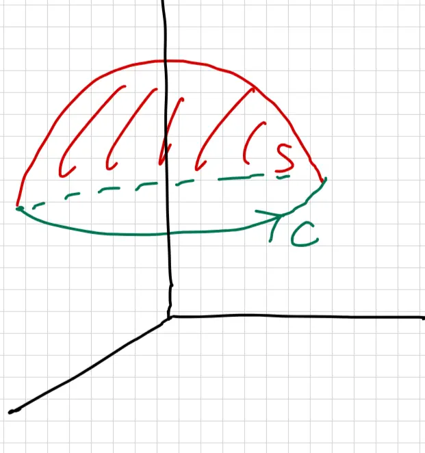

Lesson 35: Stokes Theorem - II (17.7)
Announcements:
- Exam 2 on Tuesday 04/21
- \(\rightarrow\) study guide, instructions on Brightspace.
- Office Hours schedule on Brightspace
- SI Session exam Review on Sunday
- Final Exam on Tuesday 05/05.
Accessible transcription generated on 4/15/2026
Relates Surface integral with line integral.
![A hand-drawn diagram illustrating the relationship between a surface and its boundary. It features a curved, green-outlined surface labeled 'S'. Small purple arrows point outwards from different points on the surface, representing normal vectors. The edge of the surface is a closed loop labeled 'C', with green arrows indicating a specific orientation along the curve. To the right of the diagram, a bracket groups the labels 'S - Surface' and 'C - Boundary Curve' with the instruction 'Compatible orientation: use Right hand Rule'.](img/lesson-35-1.webp)
\( S \) - Surface
\( C \) - Boundary Curve
Compatible orientation: "use Right hand Rule"
(where \( \operatorname{curl} \vec{F} = \vec{\nabla} \times \vec{F} \))
Follows theme: integral "cancels" derivative & compute on Boundary
\(\vec{F} = \vec{\nabla} \phi\) is conservative vector field
![A diagram illustrating path independence for the Fundamental Theorem of Calculus for Line Integrals. It depicts two distinct red paths, labeled C1 and C2, both starting at a point labeled 'start' and ending at a point labeled 'end'. Arrows on both curves indicate the direction of travel from start to end. The paths differ in their shape, with C1 taking a lower route and C2 taking a higher, more arched route, emphasizing that for a conservative field, the line integral's value depends only on the endpoints.](img/lesson-35-2.webp)
"path independent"
\(\vec{G} = \text{curl} \vec{F}\) is curl field
![A diagram illustrating surface independence in Stokes' Theorem. It shows a central green closed boundary curve labeled C. Two different surfaces are depicted that share this same boundary curve: a larger outer surface labeled S1 and a smaller inner surface labeled S2. Both surfaces are shaded with red diagonal hatching lines. An arrow on the green boundary curve C indicates the positive orientation for the line integral. This illustrates that the surface integral of the curl of a vector field is the same for any surface bounding the same curve C.](img/lesson-35-3.webp)
"surface independent"
\( \vec{F} = \langle xz, yz, xy \rangle \), Compute \( \iint_S \text{curl } \vec{F} \cdot d\vec{S} \) using Stokes theorem where \( S \) is part of \( x^2 + y^2 + z^2 = 4 \) above \( z = \sqrt{3} \).

(1) Direct Computation (Note: example in last class)
(2) Apply Stokes
When applying Stokes' Theorem, there are two common paths shown:

Parametrize \( C \):
\( C \): intersection of \( x^2 + y^2 + z^2 = 4 \), \( z = \sqrt{3} \)
\[ \Rightarrow x^2 + y^2 + (\sqrt{3})^2 = 4 \implies x^2 + y^2 = 1, \quad z = \sqrt{3} \]
This is a circle of radius 1 on the plane \( z = \sqrt{3} \).
The parameterization is given by:
\( \mathbf{r}(t) = \langle \cos t, \sin t, \sqrt{3} \rangle \), where \( 0 \le t \le 2\pi \)
The line integral is calculated as follows:
\[ \oint_C \vec{F} \cdot d\vec{r} = \int_{0}^{2\pi} \vec{F}(\mathbf{r}(t)) \cdot \mathbf{r}'(t) \, dt \]
Given the vector field \( \vec{F} = \langle xz, yz, xy \rangle \), we substitute the parameterization:
\[ \vec{F}(\mathbf{r}(t)) = \langle \sqrt{3} \cos t, \sqrt{3} \sin t, \sin t \cos t \rangle \]
The derivative of the position vector is:
\[ \mathbf{r}'(t) = \langle -\sin t, \cos t, 0 \rangle \]
Calculating the dot product:
\[ \vec{F}(\mathbf{r}(t)) \cdot \mathbf{r}'(t) = (\sqrt{3} \cos t)(-\sin t) + (\sqrt{3} \sin t)(\cos t) + (\sin t \cos t)(0) = 0 \]
Therefore:
\[ \Rightarrow \oint_C \vec{F} \cdot d\vec{r} = 0 \]

\( S_2 = \text{disk of Radius } 1 \)
\( \text{on } z = \sqrt{3} \text{ (parallel to } xy \text{ plane)} \)
\( \vec{n} = \text{unit normal} = \langle 0, 0, 1 \rangle \)
\( \vec{F} = \langle xz, yz, xy \rangle \leadsto \text{curl } \vec{F} = \begin{vmatrix} i & j & k \\ \partial/\partial x & \partial/\partial y & \partial/\partial z \\ xz & yz & xy \end{vmatrix} \)
\( \quad \quad \quad \quad \quad \quad \quad \quad \quad \quad \quad \quad = \langle x-y, x-y, 0 \rangle \)
\[ \iint_{S} \text{curl } \vec{F} \cdot d\vec{S} = \iint_{S_2} \text{curl } \vec{F} \cdot \vec{n} \, dS = \underline{\underline{0}} \]
Suppose \( S \) is the part of the surface \( x^2 + y^2 + \frac{z^2}{a^2} = 1 \), above \( z = 0 \). Let the vector field be \( \vec{F} = \langle y, z, x \rangle \).
What is the value of \( a \) such that \( \iint_S \text{curl } \vec{F} \cdot d\vec{S} \) is maximum?
![A 3D coordinate system diagram illustrating an ellipsoid surface S on a grid background. The z-axis is vertical, the y-axis extends to the right, and the x-axis extends forward-left. The surface S is the upper half of an ellipsoid defined by x^2 + y^2 + (z^2/a^2) = 1, depicted as a dome shape. The peak of this dome on the positive z-axis is labeled with the point (0, 0, a). The base of the dome sits on the xy-plane (z=0), forming a circular boundary curve C with the equation x^2 + y^2 = 1. Below the dome, on the xy-plane, a flat circular disk is shaded and labeled S2, representing the surface bounded by the same curve C. The diagram highlights that the boundary C is independent of the height parameter a.](img/lesson-35-7.webp)
Analysis:
The surface \( S \) is a part of an ellipsoid. By Stokes' Theorem, the surface integral of the curl of a vector field over \( S \) is equal to the line integral of the vector field along its boundary curve \( C \): \[ \iint_S \text{curl } \vec{F} \cdot d\vec{S} = \oint_C \vec{F} \cdot d\vec{r} \]
Irrespective of the value of \( a \), the boundary curve \( C \) remains: \[ x^2 + y^2 = 1, \quad z = 0 \]
Since the boundary curve \( C \) is the same for all \( a > 0 \), the value of the integral does not depend on "\( a \)". Therefore, the integral is constant for any value of \( a \).
Verify by applying Stokes' Theorem:
\( C: x^2 + y^2 = 1, z = 0 \)
\( \vec{r}(t) = \langle \cos t, \sin t, 0 \rangle, \quad 0 \le t \le 2\pi \)
\( \vec{r}'(t) = \langle -\sin t, \cos t, 0 \rangle \)
\( \vec{F} = \langle y, z, x \rangle \leadsto \vec{F}(\vec{r}(t)) = \langle \sin t, 0, \cos t \rangle \)
\[ \oint_{C} \vec{F} \cdot d\vec{r} = \int_{0}^{2\pi} \vec{F}(\vec{r}(t)) \cdot \vec{r}'(t) \, dt = \int_{0}^{2\pi} (-\sin^2 t) \, dt \]
Use: \( \cos 2t = 1 - 2\sin^2 t \)
\[ = \int_{0}^{2\pi} \frac{1}{2} [\cos 2t - 1] \, dt \] \[ = \frac{1}{2} \left[ \frac{\sin(2t)}{2} - t \right]_{0}^{2\pi} \] \[ = -\pi \]
\( S_2 \): Disk of Radius 1 in \( xy \) plane
\( \Rightarrow \vec{n} = \text{unit normal} = \langle 0, 0, 1 \rangle \)

\( \vec{F} = \langle y, z, x \rangle \)
\[ \text{curl } \vec{F} = \begin{vmatrix} \mathbf{i} & \mathbf{j} & \mathbf{k} \\ \frac{\partial}{\partial x} & \frac{\partial}{\partial y} & \frac{\partial}{\partial z} \\ y & z & x \end{vmatrix} = \langle -1, -1, -1 \rangle \]
\( C \) is triangle \( (0,0,0) \), \( (0,1,0) \), \( (0,0,1) \)
\( \vec{F} = \langle -3y, 4z, 6x \rangle \), Compute \( \oint_{C} \vec{F} \cdot d\vec{r} \)
![A 3D coordinate system graph illustrating a triangular path C in the yz-plane. The x, y, and z axes are labeled, with the triangle having vertices at the origin (0,0,0), the point (0,1,0) on the y-axis, and the point (0,0,1) on the z-axis. The boundary of the triangle is composed of three directed segments: C1 is a path along the y-axis from the origin to (0,1,0); C2 is the hypotenuse connecting (0,1,0) to (0,0,1); and C3 follows the z-axis from (0,0,1) back down to the origin. Arrows on each segment indicate a counter-clockwise orientation when viewed from the positive x-axis direction.](img/lesson-35-9.webp)
→ CANNOT use Greens (Not in 2D) or FTCLI (Not Conservative)
→ \[ \oint_{C} \vec{F} \cdot d\vec{r} = \int_{C_1} \vec{F} \cdot d\vec{r} + \int_{C_2} \vec{F} \cdot d\vec{r} + \int_{C_3} \vec{F} \cdot d\vec{r} \]
* find \( S \) whose boundary is \( C \)
* \[ \oint_{C} \vec{F} \cdot d\vec{r} = \iint_{S} \text{curl } \vec{F} \cdot d\vec{S} \]
![A 3D coordinate system graph showing a surface \( S \) in the \( yz \)-plane. The axes are labeled \( x \), \( y \), and \( z \), with the \( x \)-axis pointing toward the bottom-left, the \( y \)-axis to the right, and the \( z \)-axis upward. A right triangle \( S \) is shaded with pink diagonal lines and lies entirely within the \( yz \)-plane. Its vertices are at the origin \( (0,0,0) \), on the \( y \)-axis at \( (0,1,0) \), and on the \( z \)-axis at \( (0,0,1) \). The boundary of the triangle, labeled \( C \), has arrows indicating a counter-clockwise orientation when viewed from the positive \( x \)-axis. A green arrow labeled \( S \) points toward the surface. The normal vector \( \vec{n} \) is specified in the text as being in the positive \( x \)-direction, \( \langle 1, 0, 0 \rangle \).](img/lesson-35-10.webp)
\( S \): Triangle in \( yz \)-plane with Boundary \( C \)
\( \vec{n} = \text{positive } x \text{-direction} = \langle 1, 0, 0 \rangle \)
\( \vec{F} = \langle -3y^2, 4z, 6x \rangle \)
Calculate the curl of \( \vec{F} \):
\[ \text{curl } \vec{F} = \begin{vmatrix} \mathbf{i} & \mathbf{j} & \mathbf{k} \\ \frac{\partial}{\partial x} & \frac{\partial}{\partial y} & \frac{\partial}{\partial z} \\ -3y^2 & 4z & 6x \end{vmatrix} \]
\[ \text{curl } \vec{F} = \langle -4, ?, ? \rangle \]
Since \( \vec{n} = \langle 1, 0, 0 \rangle \), we only need the first component for the dot product:
\[ \text{curl } \vec{F} \cdot \vec{n} = -4 \]
Evaluate the surface integral:
\[ \iint_S \text{curl } \vec{F} \cdot \vec{n} \, dS = \iint_S (-4) \, dS \]
\[ = -4 \iint_S 1 \, dS \]
\[ = -4 (\text{Area}(S)) \]
The surface \( S \) is a triangle with base 1 and height 1:
\[ = -4 \times \left( \frac{1}{2} \times 1 \times 1 \right) \]
\[ = -2 \]